第一个python程序
在python中程序的执行是自上而下的，从没有缩进的代码开始执行，只有处于调试状态下才可以设置断点
1 | print("hello world") |
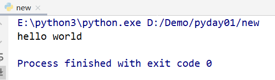
数值类型
一切编程语言都是以数据为基石的，python中提供的基本数据类型
| 类型 | 英文 | 数据 |
|---|---|---|
| 整形 | int | 整数，无限 |
| 浮点型 | float | 小数 |
| 负数 | complex | 负数由实数部分和虚数部分构成 |
python中的证书类型，type可以被用于查看指定数值或变量的类型
1 | print(type(10), 10) |
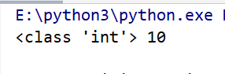
在python3中，所有的整数都是int类型，可以表示的范围是无限的
1 | print(123456789 ** 10) |
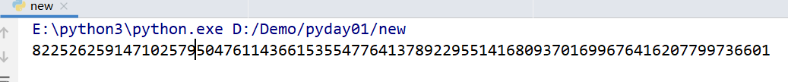
也可以将十进制数转换成不同进制的数
1 | print(hex(100), oct(100)) |
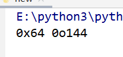
也可以将字符串对应的进制转换成十进制
1 | print(int('64',16)) |
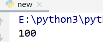
字符串类型
python中没有单字符类型，只有字符串类型，被包裹再’’或””之间。
python中的字符串类型：str
1 | print("this is a \"string\"") |
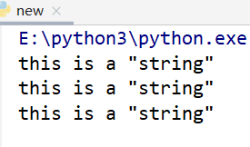
单引号(双引号)中输出双引号(单引号)需要转义
三个单引号使用最多的是 多行注释
python中的变量
变量与标识符
在python中定义变量，不需要写变量类型，但是需要初始化，会根据初始化的数据类型自动设置变量类型
第一次存入一个值，变量就被初始化（或创建）此后，可以在表达式中使用它
变量的名字也叫做标识符，python中标识符定义规则如下
- 由字母，数组，下划线组成
- 第一个字母必须是字母或者下划线
- 对大小写敏感
- 不能是关键字
关键字
python中的关键字
| 算数 | 引入 | 异常 | 控制 | 操作与状态 | 返回退出 | 定义 |
|---|---|---|---|---|---|---|
| and | import | except | while | del | return | lambda |
| or | as | try | if | assert | yield | class |
| in | from | finally | else | True | continue | def |
| is | raise | elif | Flase | pass | global | |
| not | with | for | None | break | nonlocal |
python中的布尔类型全部为首字母大写
1 | print(True, False) |
python是一个弱类型的语言，意思指的是在程序的运行过程中，变量的类型可能是变化的，指明变量的类型没有意义
1 | number = 100 |
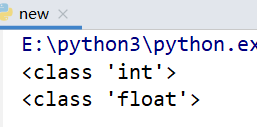
每一个变量都有一个对应的引用计数，当一个变量的引用计数变为0的时候，变量会被销毁
1 | import sys |
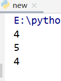
python中的输入与输出
python中的输入函数为input，在输入的时候就可以输入提示信息，例如：
1 | a = input("请输入一个数字") |
input函数返回的是一个str类型的数据
可以通过eval将输入的内容自动转换成与输入对应的类型
1 | a = input("请输入一个数字") |
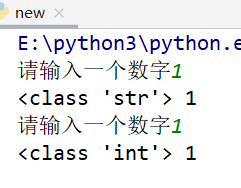
python3中输出主要使用函数print，print函数可以接收不确定个数的参数，并且能够将其格式化输出
方式一：使用%进行格式化输出
1 | print("%d * %d = %d" %(10,10,10 * 10)) |
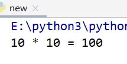
方式二：使用format进行格式化输出
1 | print("{} * {} = {}".format(10,10,10 * 10)) |
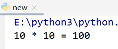
python基础语法
python中的运算符 ** (求n方)
1 | print(2**3) |
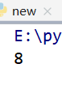
python中的运算符之 / (保留小数)和 // (截断除法)
1 | print(2 / 3) |
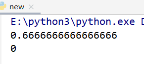
python中的运算符之 == (值)和 is (地址)
在python2中 <> 的意思就是不等于
1 | l1 = [1, 2, 3] |
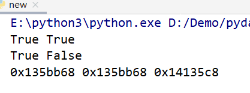
python中的运算符之 in (某一个元素是不是指定序列的成员)
1 | print('a' in 'abc') |
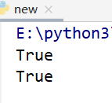
选择结构
python中只有 if else 没有switch case
1 | number = eval(input("请输入一个数：")) |
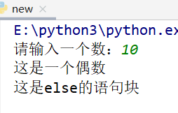
一些常见表达式的结果值：对于数值类型，非空就是True，
对于序列类型（字符串、列表），没保存东西就是Flase
列表
python中的基本类型值列表
列表的基本操作
1 | l = [1, "2", 3.3, False] |
元祖
元祖是不可变的序列，它使用 圆括号逗号 来表示
1 | t = 1, |
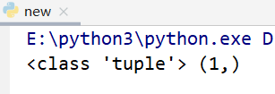
元祖的解包：使用 a,b = b,a的写法可以交换两个数，元祖有一个特性，当将一个元祖作为等号右边的时候，如果等号的左边变量的个数和元祖内元素的个数相同的时候，就会将元祖的每一个元素按照顺序赋值给前面的变量
1 | a, b, c, d, e = (1, 2, 3, 4, 5) |
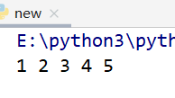
首先使用 , 将等号右边的b和a组成了一个临时的元祖(20,10)，对这个元祖进行解包，赋值给a b
1 | a = 10 |
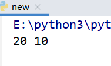
元祖的不变指的是保存的内容不变
1 | t = (1, [2, 3, 4], 5) |
实际上元祖中保存的是(1的地址，列表的地址，5的地址)
t[0] = 10 相要修改元祖内第一个元素的数据，不能成功
t[1] [0] =10 修改的实际上是元素二的列表保存的内容，没有修改本身
集合
基本类型之 集合{元素} ，元素之间没有特定关联，集合内的数据是保持唯一的
1 | s = { 10, 10, 10, 20, 30, 40, 40 } |
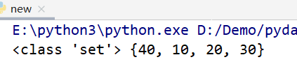
字典
字典是一种可变容器模型，且可存储任意类型对象
1 | d = { 'a': 1, 'b': 2 } |
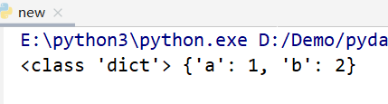
1 | d = { 'a': 1, 'b': 2 } |
python中的while循环使用方式和c\c++相同
python中的for循环
1 | for i in range(100): |
循环遍历
1 | l = list("123456789") |
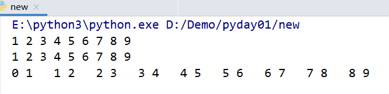
for中可以搭配break和continue
for搭配break和else可以生成新的语法
1 | #迭代10到20之间的数字 |
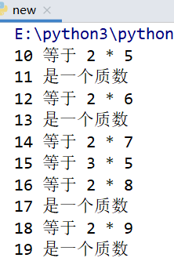
使用列表生成式：生出有一定规则的列表
1 | l = [i for i in range(100) if i % 8 == 0] |
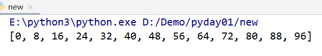
1 | l = [i for i in range(100) for j in range(100) if j % 8 == 0] |
遍历字典的方式，三种依赖三个函数
1 | d = { 1:1, 2.2:2, "3":3, (4,):4 } |
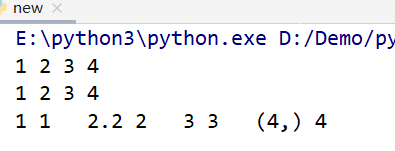
函数
python中的函数使用def定义，后面紧跟着函数名和参数列表，参数没有指定类型，而且也不需要指定返回值的类型
1 | def func(): |
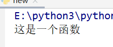
接收两个数，使用return返回较大的值
1 | def maxinum(n1, n2): |
一个没有返回值的函数
1 | def noreturn(n1, n2): |
函数的默认参数，参数的设定必须从右向左
1 | def defaultpram(n, m=10): |
使用函数时指定某一个参数的值
1 | def test(a, b, c): |
给函数传入不确定个数的参数之元祖(*)
如果参数添加了*表示接收的数据会被组合成一个元祖进行保存，传入的数据是不能够被改变的
1 | def my_print(*arg): |
给函数传入不确定个数的参数之字典(**)
当参数指定为**的时候，表示传入的会被组织成一个字典，传入的必须是键值对，传入的内容能够被修改
1 | def my_print(**arg): |
python中的作用于分为全局的和函数内的
1 | def test(): |
1 | g_number = 100 |